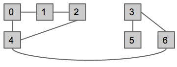
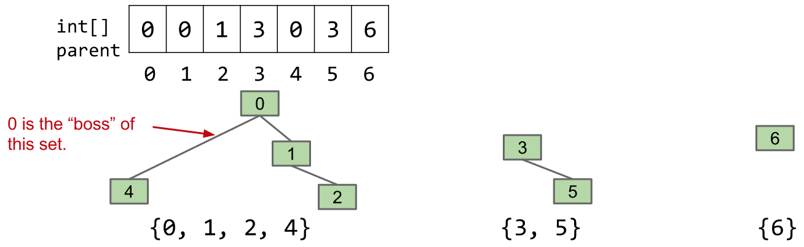
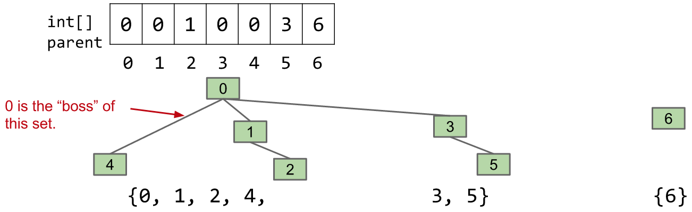

Disjoint Sets
- We will now look at constructing ADT's (Abstract Data Types)
- Dynamic connectivity problem: construct a DisjointSet ADT such that given a set of connected integer pairs, we can efficiently determine whether or not two integers are connected
- For example, given the following commands to our ADT, we should get the following results:
connect(0, 1)
connect(1, 2)
connect(0, 4)
connect(3, 5)
isConnected(2, 4)
isConnected(3, 0)
connect(4, 2)
connect(4, 6)
connect(3, 6)
isConnected(3, 0)
- This is visualized as follows:

- Bad, naive implementation idea: keep track of every single connection pair/line, and search through these (horrible runtime)
- Better implementation: keep track of connected components (we have a group of lists, with each list detailing a series of integers that are connected to each other)
- Can be implemented with
QuickFind algorithm (have an array of size N storing the connected component ID of each of the N elements; as a connect link connects two connected components, update all members of both connected components to have the same ID; determine if two elements are connected if their ID is the same) - This implementation is slow: the constructor and
connect both take N time, but isConnected takes constant time worst case
- Even better implementation:
QuickUnion
- Still use connected components, but make it such that combining two connected component sets only requires changing one value
- Do this by thinking about elements as groups of nodes in trees
- When making a connection between two nodes A and B, find the roots of both nodes A and B, and connect the roots in the tree structure
- Actual implementation: have an array of size N storing each node's parent, and update this array as connections are made (find the "highest" parent of each of the elements to be connected, and update one of these highest parents to now have the other as it's parent)
- Visualized below, before and after
connect(5, 2) command:


- Performance issue: trees can get too tall (parents hierarchy essentially just becomes one long linked-list)
- While better average, worse in worst-case: constructor,
connect, and isConnected all take N time worst-case
- Best implementation:
WeightedQuickUnion:
- Modify
QuickUnion to avoid tall trees - Do this by tracking tree size, and connecting smaller tree to larger tree always (smaller tree's root now becomes child of larger tree's root)
- Implemented by having the same
parent array as earlier, along with a size array (both of size N)
- Now when we call
connect, we link the smaller root to the larger root, and update the overall parent's size in the size array
- Now, max depth of any item is logN
- Performance: constructor takes N time, but
connect and isConnected take logN time
- Further improvement: Path Compression (CS 170 sneak peek!):
- Same as
WeightedQuickUnion, but now when we call isConnected, as we do look-up from child nodes to the overall tree roots to determine if two elements have same overall root (and are thus connected), at the same time set each travelled node's parent to the overall root (both child nodes and all the intermediary parent nodes now have their tree's overall root as their direct parent) - This essentially leads to a very very wide tree (eventually with enough
isConnected calls, we would have a tree of depth 1, with all the elements having a single common root element) - This gives a runtime that is very close to amortized constant time
- The cost of updating parents as we do
isConnected calls is very marginal - Thus, further performance improvement over
WeightedQuickUnion
Full code here:
public class WeightedQuickUnionDSWithPathCompression implements DisjointSets {
private int[] parent;
private int[] size;
public WeightedQuickUnionDSWithPathCompression(int N) {
parent = new int[N];
size = new int[N];
for (int i = 0; i < N; i++) {
parent[i] = i;
size[i] = 1;
}
}
private int find(int p) {
if (p == parent[p]) {
return p;
} else {
parent[p] = find(parent[p]);
return parent[p];
}
}
public boolean isConnected(int p, int q) {
return find(p) == find(q);
}
public void connect(int p, int q) {
int i = find(p);
int j = find(q);
if (i == j) return;
if (size[i] < size[j]) {
parent[i] = j;
size[j] += size[i];
} else {
parent[j] = i;
size[i] += size[j];
}
}
}